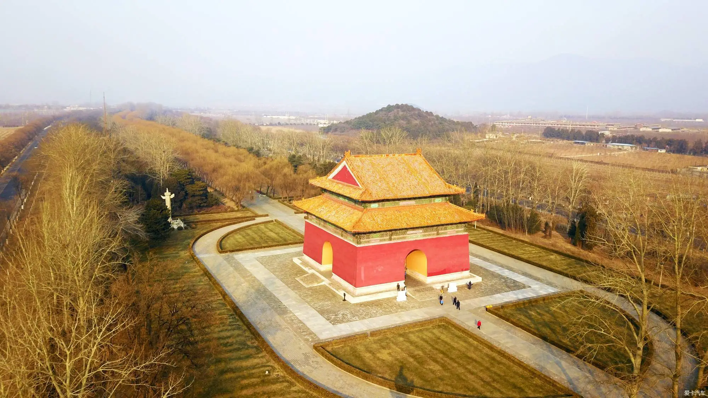

The Ming Tombs
From： baike.baidu.com

In 2000, The Xianling Tomb, Western Qing Tomb and the Eastern Qing Tomb were inscribed in the World Cultural Heritage List; in 2003, Xiaoling Tomb and the Ming Tombs were inscribed on the World Cultural Heritage List; in 2004, three Imperial Tombs of the Qing Dynasty - the Fuling Tomb, the Zhaoling Tomb and the Yongling Tomb - were inscribed on the World Cultural Heritage List as an extension of the royal tombs of the Ming and Qing dynasties.
The Ming Tombs are located at the foot of Tianshou Mountain, about fifty kilometers from Beijing. The area is surrounded by mountains, with a plain in the middle and a small river winding in front of the tombs. The thirteen imperial tombs were built on the hills, respectively on the foothills to the east, west and north, forming a complete, large-scale and majestic mausoleum complex. According to the Ming Dynasty magicians, this was a "Feng Shui" location, an excellent "auspicious place", so it was chosen by the Ming Dynasty as the "longevity area" for the imperial tombs.
The Ming Tombs were built in 1409 and has a history of more than 300 to 600 years. Covering an area of 40 square kilometers, it is the largest surviving imperial tomb complex in China even the world, with the largest number of imperial tombs. From the construction of the Changling Mausoleum in the seventh year of Emperor Yongle in the Ming Dynasty (1409 AD) to the Siling Tomb in the early years of Emperor Shunzhi in the Qing Dynasty, 13 imperial tombs were built in succession over a period of more than 200 years, with 13 emperors, 23 queens and 10 concubines buried.
 330445074@qq.com
330445074@qq.com